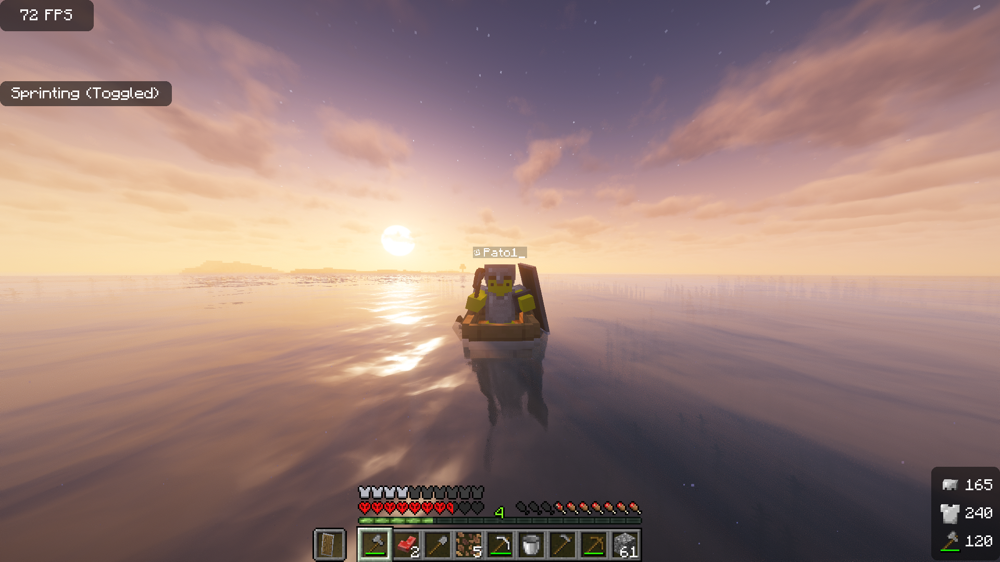
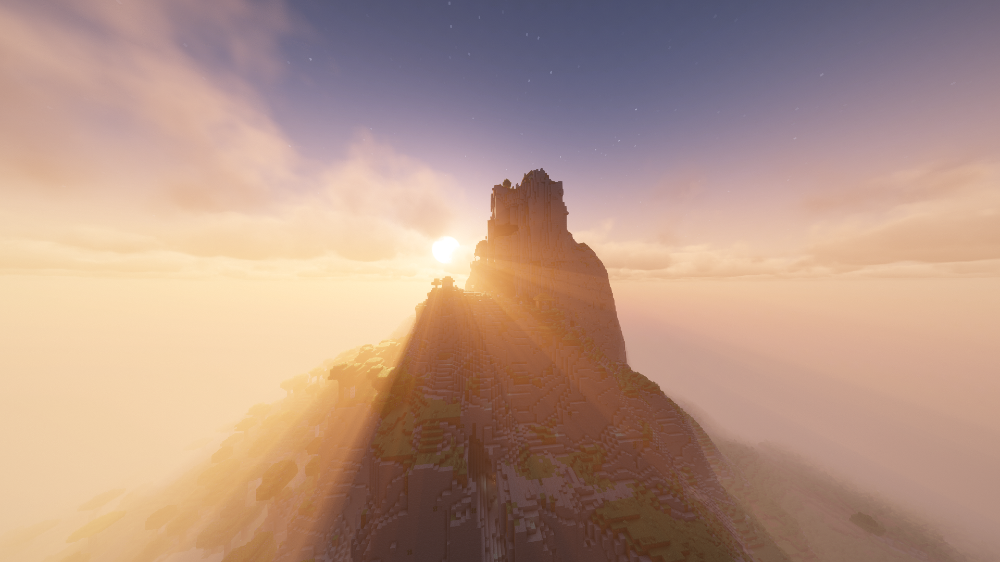
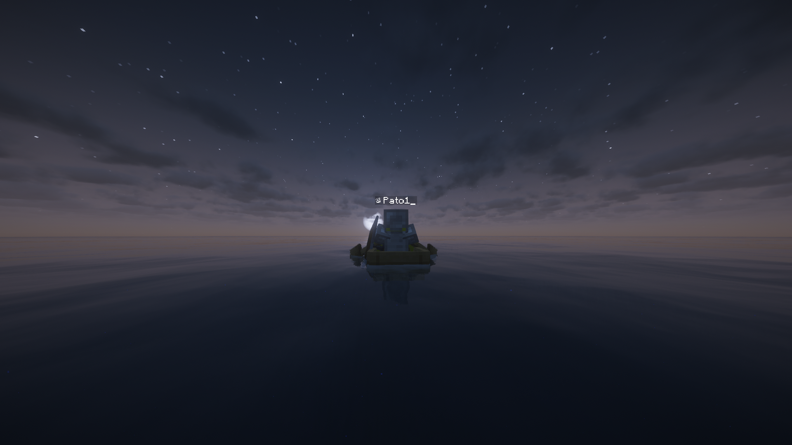
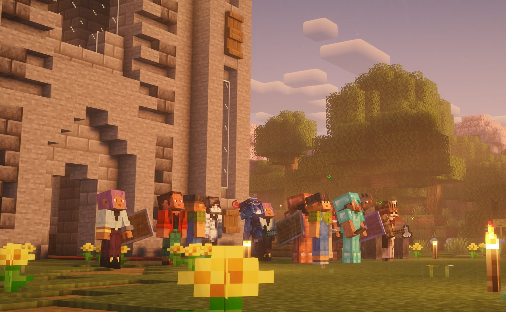
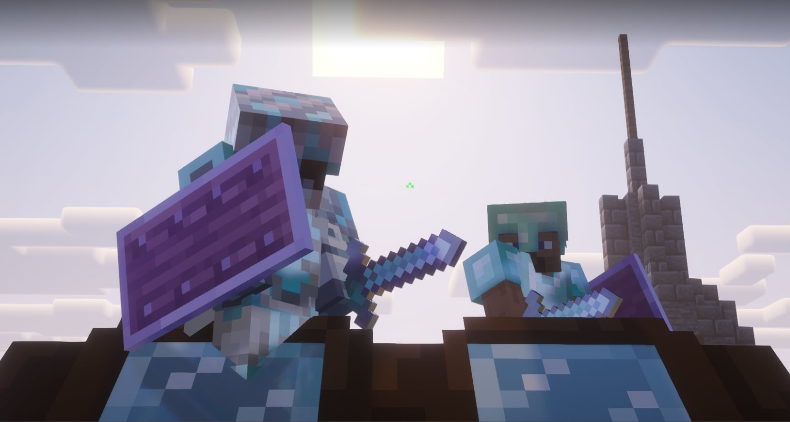
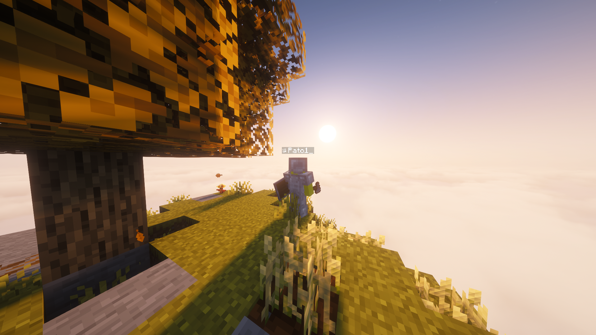
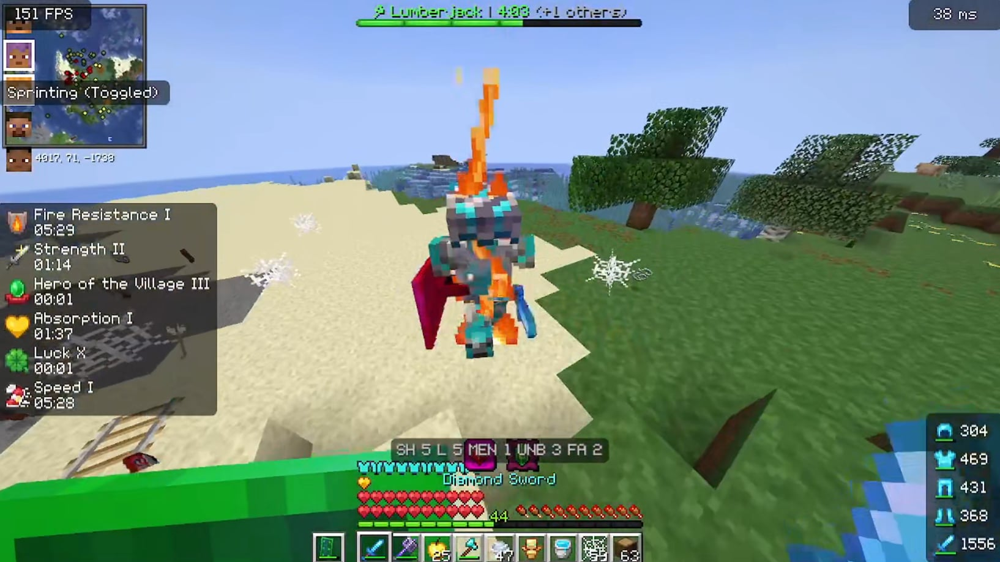
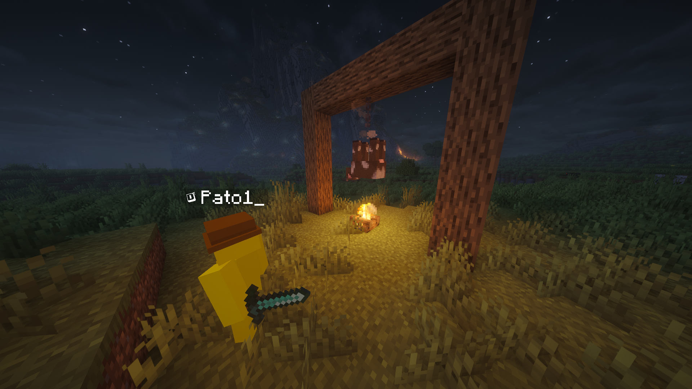
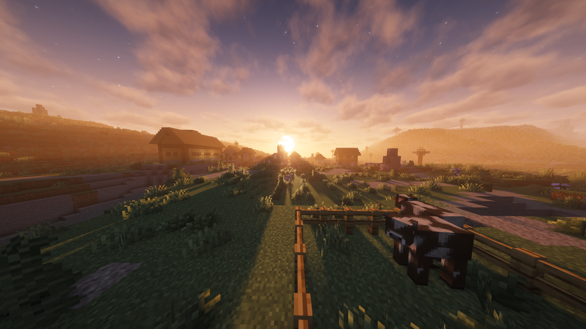

Laro o Realidad?: Pagtuklas sa mga Isyung Panlipunan sa "Minecraft"
Ang Minecraft ay isang sandbox game kung saan ang manlalaro ay pwedeng gumawa ng kahit ano na gusto nilang gawin. Pagtatayo ng gusali, pagmimina, pagsasaka, pakikipaglaban, inhenyeriya, at marami pang iba. Ang laro ay walang nakatakdang layunin o “kwento” para sa manlalaro, at sila ang nagdedesisyon kung paano nila gustong makipag-ugnayan sa kapaligiran. Ang mga tao ay may maraming paraan kung paano naglalaro ng Minecraft. Ito ay pwedeng sa pamamagitan ng Player vs. Player (PVP), paglalaro kasama ang ibang manlalaro sa isang “multiplayer server”, at marami pang iba.


Ako ay nagagandahan sa kung gaano kaganda ang laro. Ito ay may pakiramdam ng nostalgia, habang ginagawa rin nitong nakakarelaks ang pakiramdam. At ito ay lalong naitatampok sa katotohanan na walang hangganan kung gaano kaganda ang larong ito, kung saan ang manlalaro ay pwedeng magtayo at gumamit ng kanilang pagiging malikhain.


Ang larong ito ay nagpapahintulot din sa akin at sa aking mga kaibigan na maglaro nang sabay. At sa tuwing kami ay naglalaro nang sama-sama, ako ay laging nag-e-enjoy.

Pagdating sa Minecraft, ang pumupukaw sa aking pansin ay laging ang Player vs. Player (PVP) na bahagi. Ako ay nakakaramdam ng paghamon kapag ako ay nakikipaglaban sa ibang manlalaro na mas magaling kaysa sa akin, ngunit ako ay nakakaramdam din ng kasiyahan sa tuwing ako ay nananalo. Ang pag-aaral ng mga bagong mekaniko at ang pagiging mas magaling araw-araw ang nagtutulak sa akin upang magpatuloy sa paglalaro ng Minecraft.

Maikokonekta ang karahasan bilang isang isyung panlipunan sa Minecraft sa larangan ng Player vs. Player (PVP). Kapansin-pansin ito dahil sa maraming nakamamatay na sandata na pwedeng gawin upang makasakit ng ibang manlalaro. Sa totoong buhay, itinuturing na malaking krisis ang karahasan kung saan nakapagtala ang UNODC Global Study on Homicide ng tinatayang 464,000 na tao na namamatay taun-taon dahil sa pamamaslang sa buong mundo.


Maikokonekta rin ang pang-aabuso sa hayop sa Minecraft, dahil pinapatay ang mga hayop para sa pagkain at loot. Pwede ring magtayo ang mga manlalaro ng mga makina upang patuloy na magparami at pumatay ng mga hayop nang awtomatiko. Sa ating lipunan, masasalamin dito ang industriyal na paghahayupan, kung saan ayon sa FAO ng United Nations, humigit-kumulang 87.9 bilyong alagang hayop sa lupa (land animals) ang pinapatay taun-taon para sa pagkain.
Maikokonekta rin ang pagpuksa sa kagubatan sa Minecraft, dahil kailangang magputol ng mga puno ang manlalaro upang talagang umunlad sa laro. Pinipilit ang manlalaro na sumira ng mga kagubatan para lamang makagawa ng mga gamit. Sa totoong mundo, ipinapakita sa FAO Global Forest Resources Assessment na humigit-kumulang 10.9 milyong ektarya ng kagubatan ang nasisira taun-taon dahil sa deforestation.

Maaaring iugnay ang mensahe ng Minecraft sa kasalukuyang mga isyung panlipunan sa pamamagitan ng mga sistema ng laro. Una, maihahambing ang deforestation sa laro sa totoong krisis sa klima na dulot ng labis na pagkuha ng likas na yaman. Pangalawa, maitutulad ang industriyal na paghahayupan sa laro sa factory farming na nag-aabuso sa mga hayop para sa kita. Pangatlo, maikokonekta ang karahasan sa PVP sa patuloy na giyera, hidwaan, at cyberbullying ngayon. Sa pangkalahatan, ipinapaalala ng laro ang kahalagahan ng responsableng paggamit ng kapangyarihan at likas na yaman.
Mga Sanggunian
https://www.unodc.org/unodc/en/data-and-analysis/global-study-on-homicide.html
https://www.fao.org/faostat/en/#data
https://www.fao.org/forest-resources-assessment/en/